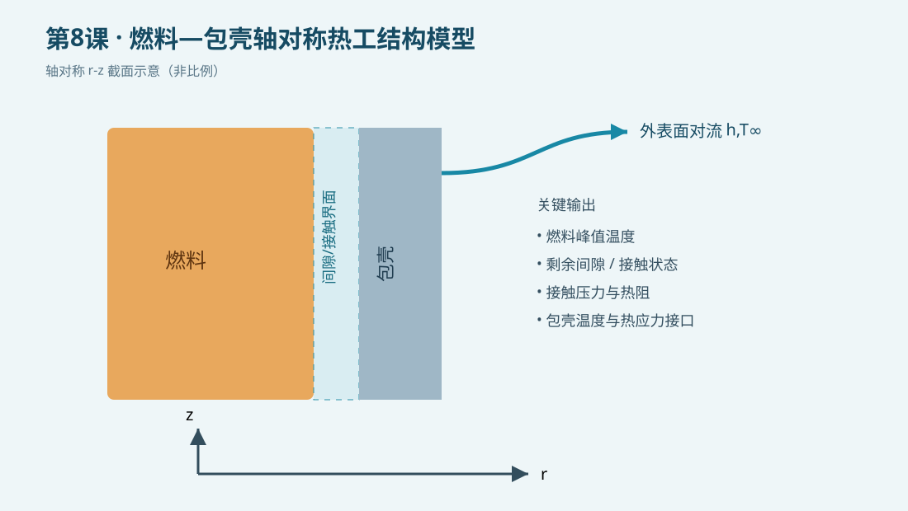

{kind=link}
验证状态：已静态检查，尚未运行 MAPDL
已静态核对SI单位、轴对称热分析流程和每条可执行命令的中文行尾注释；本机未运行MAPDL，接触状态采用教学用等效间隙层/罚刚度参数化，不声称替代核级接触本构。

/CLEAR/PREP7PLANE55KEYOPTMPRECTNGAATTAGLUEAMESHBFASFL*IF*DOSOLVE*GET*VWRITE
今日目标
建立一个可复用的轴对称燃料—间隙—包壳教学模型，理解温度、热膨胀、间隙状态和界面传热之间的关系。
物理问题
采用 SI 单位制（m、kg、s、K、Pa）。模型表示一段长度为 0.10 m 的燃料棒 r-z 截面，燃料内生热，包壳外表面与冷却剂对流。示意图非比例。本课用于学习命令和建模链，不用于核安全评价；真实分析需采用经验证的燃料温度相关热物性、辐照膨胀、裂变气体压力、包壳蠕变及接触导热关联式。
关键命令
/PREP7：进入前处理器，定义参数、材料、几何和网格。PLANE55：二维热传导单元；轴对称选项把截面旋转为圆柱体。BFA,HGEN：对燃料区域施加体积热源。SFL,CONV：在包壳外边界施加对流换热。*IF：根据剩余间隙选择开间隙或接触状态。*DO：对温度等参数做批量扫描。*GET：提取峰值温度等结果量。*VWRITE：把参数和结果写入文本，便于画图或再分析。
完整脚本
下载并运行 [example.inp](example.inp)。脚本每条可执行命令均附中文行尾注释。
预期结果
检查温度场是否从燃料中心向冷却剂方向单调降低。涉及间隙状态时，应确认热膨胀导致剩余间隙减小；间隙闭合后接触压力增大、界面热阻降低。当前文件标记为 static_only，因此不报告未经本机MAPDL求解的数值。
验证清单
- 单位：体积热源为 W/m³，对流系数为 W/(m²·K)，应力为 Pa。
- 边界：轴对称径向坐标必须是 X，轴向坐标是 Y。
- 能量：稳态时外表面对流带走的热量应接近燃料总发热。
- 网格：至少比较两种燃料、间隙和包壳网格尺寸。
- 状态：开间隙/接触切换点附近应加密参数步长。
常见错误
- 把直径当半径输入，导致体积和线功率相差数倍。
- 只改变界面导热系数，却没有检查热膨胀和接触状态是否一致。
- 将教学罚刚度当真实材料参数；正式模型应由接触算法和试验标定。
练习题
- 把燃料体积热源分别改为 1.5×10⁸、2.0×10⁸、2.5×10⁸ W/m³，比较峰值温度。
- 将外表面对流温度改成瞬态入口温度历史，并讨论控制棒抽出引起升功率时的间隙闭合顺序。
完整 example.inp（逐行中文注释）
01! 第8课：燃料—包壳轴对称热工结构模型；SI单位 m、kg、s、K、Pa 02/CLEAR,NOSTART ! 清空数据库，建立独立教学算例 03/FILNAME,lesson8_fuel_clad ! 设置输出文件名前缀 04/PREP7 ! 进入前处理器 05rf=4.00e-3 ! 燃料半径，单位 m 06rc_i=4.10e-3 ! 包壳内半径，单位 m 07rc_o=4.75e-3 ! 包壳外半径，单位 m 08height=0.10 ! 教学轴向长度，单位 m 09qv=2.0e8 ! 燃料体积热源，单位 W/m^3 10hcool=2.0e4 ! 包壳外表面对流系数，单位 W/(m^2 K) 11tbulk=580 ! 冷却剂体温，单位 K 12ET,1,PLANE55 ! 定义二维热传导单元 13KEYOPT,1,3,1 ! 设置轴对称热分析 14MP,KXX,1,3.0 ! 燃料等效导热率，单位 W/(m K) 15MP,KXX,2,16.0 ! 包壳导热率，单位 W/(m K) 16RECTNG,0,rf,0,height ! 创建燃料r-z截面 17AATT,1,,1 ! 给燃料区域指定材料1和单元1 18RECTNG,rf,rc_i,0,height ! 创建等效间隙区域 19AATT,1,,1 ! 暂用燃料材料建立几何，下一课替换为间隙材料 20RECTNG,rc_i,rc_o,0,height ! 创建包壳r-z截面 21AATT,2,,1 ! 给包壳区域指定材料2和单元1 22AGLUE,ALL ! 合并相邻区域拓扑以连续传热 23ESIZE,0.15e-3 ! 设置目标网格尺寸，单位 m 24AMESH,ALL ! 对全部区域划分网格 25ASEL,S,LOC,X,0,rf ! 选择燃料区域 26BFA,ALL,HGEN,qv ! 对燃料施加体积热源 27ALLSEL,ALL ! 恢复全部选择集 28LSEL,S,LOC,X,rc_o ! 选择包壳外圆柱边界 29SFL,ALL,CONV,hcool,tbulk ! 施加外表面对流边界 30ALLSEL,ALL ! 恢复完整模型 31FINISH ! 完成前处理 32/SOLU ! 进入求解器 33ANTYPE,STATIC ! 求解稳态温度场 34SOLVE ! 执行热分析 35FINISH ! 结束求解 36/POST1 ! 进入后处理 37SET,LAST ! 读取最后结果集 38*GET,tmax,NODE,0,MAX,TEMP ! 提取全模型最高温度，单位 K 39PLNSOL,TEMP ! 绘制温度云图 40FINISH ! 结束第8课算例